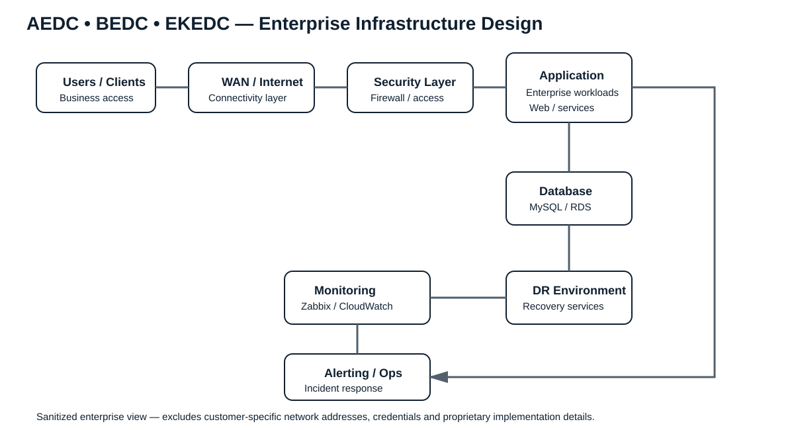

01
1Gov Cloud & DR
Government application infrastructure, NGINX, DNS, database and disaster recovery.
02
CICOD SaaS on AWS
AWS cloud architecture covering networking, compute, database, security and monitoring.
03
Enterprise Electricity Distribution
AEDC, BEDC and EKEDC infrastructure design for critical enterprise applications.
1Gov architecture

CICOD SaaS on AWS

Enterprise Electricity Distribution — AEDC / BEDC / EKEDC

Architecture principles
Availability
Reduce single points of failure and design for service continuity.
Security
Apply appropriate identity, network and infrastructure controls.
Resilience
Design for failure with tested recovery paths and DR capability.
Scalability
Size infrastructure for current workloads and future growth.
Observability
Monitor infrastructure, applications, databases and availability.
Maintainability
Use documented, supportable architectures and operational procedures.
Sanitization: Diagrams intentionally omit private IPs, credentials, secrets, customer data and proprietary configuration. View technical evidence →